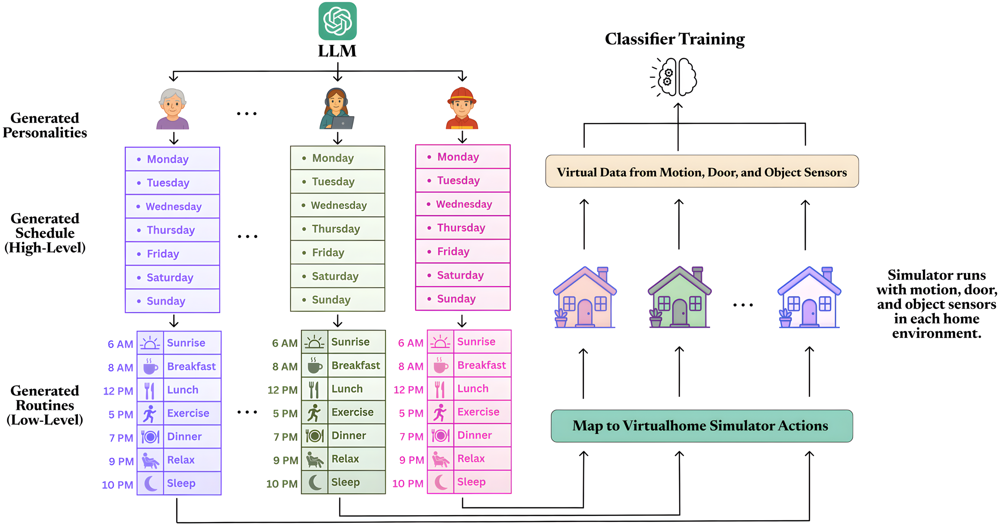
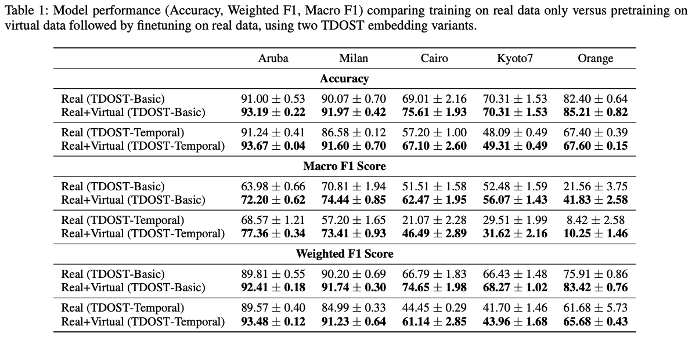
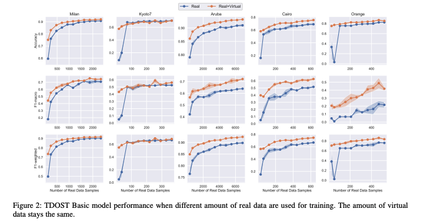

We introduce AgentSense, a virtual data generation pipeline in which agents live out daily routines in simulated smart homes, with behavior guided by Large Language Models (LLMs). The LLM generates diverse synthetic personas and realistic routines grounded in the environment, which are then decomposed into fine-grained actions. These actions are executed in an extended version of the VirtualHome simulator, X-VirtualHome, which we augment with virtual ambient sensors (motion, appliance door, and device activation) that record the agents' activities.
Routine generation uses a three-stage prompting pipeline: (1) persona generation capturing age, occupation, health, and lifestyle; (2) persona-specific high-level daily schedules conditioned on the day of the week, the rooms available in the chosen VirtualHome layout, and few-shot examples adapted from the Homer dataset; and (3) decomposition of each high-level activity into a sequence of simulator-executable actions, constrained to a predefined vocabulary of 18 allowed actions and grounded to objects in the target room. A FAISS + OpenAI-embedding nearest-neighbour step aligns LLM tokens to the simulator's ontology to eliminate hallucinations.
Our approach produces rich, privacy-preserving sensor data that reflects real-world diversity. By systematically varying personas, daily routines, home layouts, and sensor configurations, AgentSense generates datasets designed to help HAR models generalize across a wide range of real-world scenarios, without intrusive real-world data collection.
We simulate 18 distinct personas across 22 unique home layouts, generating a total of 250 days of virtual sensor data. We evaluate on five real-world smart home datasets: Aruba, Milan, Kyoto7, and Cairo from the CASAS collection, and Orange4Home. Models pretrained on the generated data consistently outperform baselines, especially in low-resource settings. Combining the generated virtual sensor data with a small amount of real data achieves performance comparable to training on full real-world datasets.


@inproceedings{leng2026agentsense,
title = {AgentSense: Virtual Sensor Data Generation Using LLM Agents in Simulated Home Environments},
author = {Leng, Zikang and Thukral, Megha and Liu, Yiqi and Rajasekhar, Hrudhai and Hiremath, Shruthi K. and He, Jingyuan and Pl{\"o}tz, Thomas},
booktitle= {Proceedings of the AAAI Conference on Artificial Intelligence},
year = {2026}
}